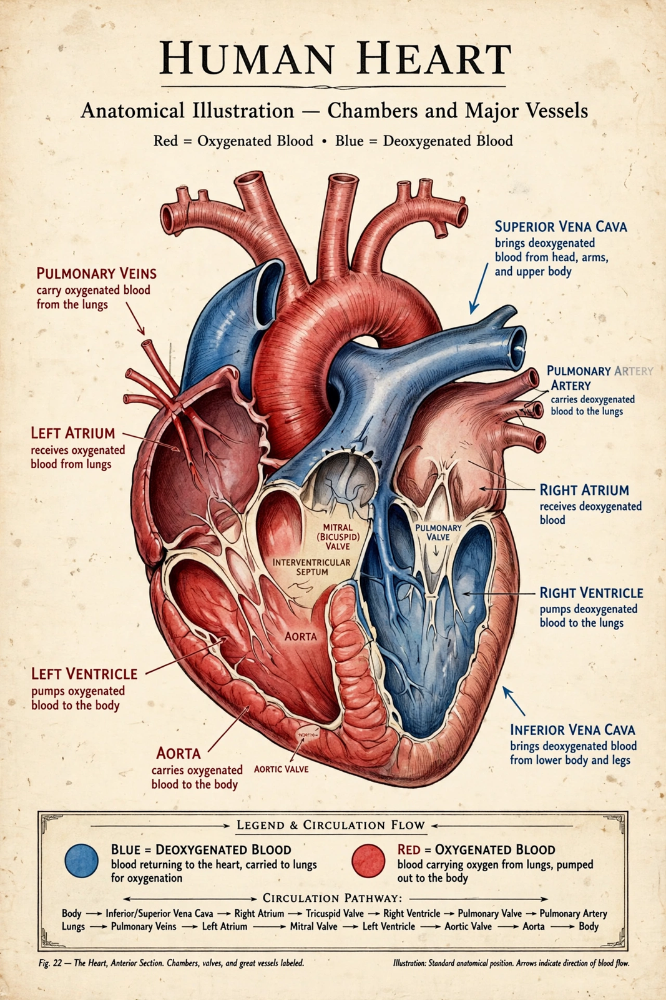

| Cardiology | |
|---|---|
 | |
| System | Cardiovascular |
| Significant diseases | Coronary artery disease, heart failure, arrhythmias, valvular heart disease, congenital heart defects |
| Significant tests | Electrocardiogram (ECG), echocardiogram, cardiac catheterization, stress test, cardiac MRI |
| Specialist | Cardiologist |
| Glossary | Glossary of cardiology |
Cardiology (from Greek καρδίᾱ kardiā, "heart" and -λογία -logia, "study") is the study of the heart. Cardiology is a branch of medicine that deals with disorders of the heart and the cardiovascular system. The field includes medical diagnosis and treatment of congenital heart defects, coronary artery disease, heart failure, valvular heart disease, and electrophysiology. Physicians who specialize in this field of medicine are called cardiologists, a specialty of internal medicine. Pediatric cardiologists are pediatricians who specialize in cardiology. Physicians who specialize in cardiac surgery are called cardiothoracic surgeons or cardiac surgeons, a specialty of general surgery.
All cardiologists study the disorders of the heart, but the study of adult and child heart disorders typically involves different training pathways. Therefore, an adult cardiologist (often simply called "cardiologist") is inadequately trained to take care of children, and pediatric cardiologists are inadequately trained for adult heart conditions. Subspecialties within cardiology include:
Coronary artery disease (CAD) is the narrowing of the coronary arteries due to atherosclerosis. It is the most common type of heart disease in many developed countries and a leading cause of death worldwide. Reduced blood flow to the heart muscle can cause angina (chest pain) and, if a plaque ruptures and a clot blocks the artery, a myocardial infarction (heart attack). Management includes lifestyle change, medications such as statins, antiplatelet agents and beta blockers, and revascularization by percutaneous coronary intervention or coronary artery bypass grafting.
Heart failure is a clinical syndrome in which the heart cannot pump sufficient blood to meet the body's needs. It may result from reduced ejection fraction (systolic dysfunction) or impaired filling (diastolic dysfunction, heart failure with preserved ejection fraction). Symptoms include breathlessness, fatigue, and fluid retention. Modern therapy with ACE inhibitors or angiotensin receptor–neprilysin inhibitors, beta blockers, mineralocorticoid receptor antagonists, and SGLT2 inhibitors has substantially improved survival.
Disorders of heart rhythm include atrial fibrillation (the most common sustained arrhythmia), supraventricular tachycardias, ventricular tachycardia and fibrillation, and bradyarrhythmias such as heart block. Treatment ranges from rate- or rhythm-controlling drugs to catheter ablation, pacemakers, and implantable cardioverter-defibrillators.
Diseases of the heart valves include aortic stenosis, mitral regurgitation, and infective endocarditis. Structural interventions such as transcatheter aortic valve replacement (TAVR) have expanded treatment options for patients at high surgical risk.
The electrocardiogram (ECG or EKG) records the electrical activity of the heart and is a cornerstone of cardiac diagnosis. Echocardiography uses ultrasound to image cardiac structure and function. Other major modalities include exercise and pharmacologic stress testing, cardiac catheterization with coronary angiography, cardiac computed tomography, cardiac magnetic resonance imaging, and ambulatory rhythm monitoring such as the Holter monitor. Blood tests including troponin and natriuretic peptides (BNP) aid in diagnosing myocardial infarction and heart failure.
The study of the heart dates to antiquity, but modern cardiology is often traced to William Harvey's 1628 description of the circulation of blood in De Motu Cordis. The invention of the stethoscope by René Laennec (1816), the electrocardiograph by Willem Einthoven (1903), cardiac catheterization by Werner Forssmann (1929), and coronary angiography by Mason Sones (1958) progressively transformed the field. The Framingham Heart Study, begun in 1948, established the modern concept of cardiovascular risk factors. Landmark advances of the late twentieth century included coronary artery bypass surgery, balloon angioplasty (Andreas Grüntzig, 1977), thrombolysis, and implantable defibrillators.
This article is a recreation from memory in the style of Wikipedia.